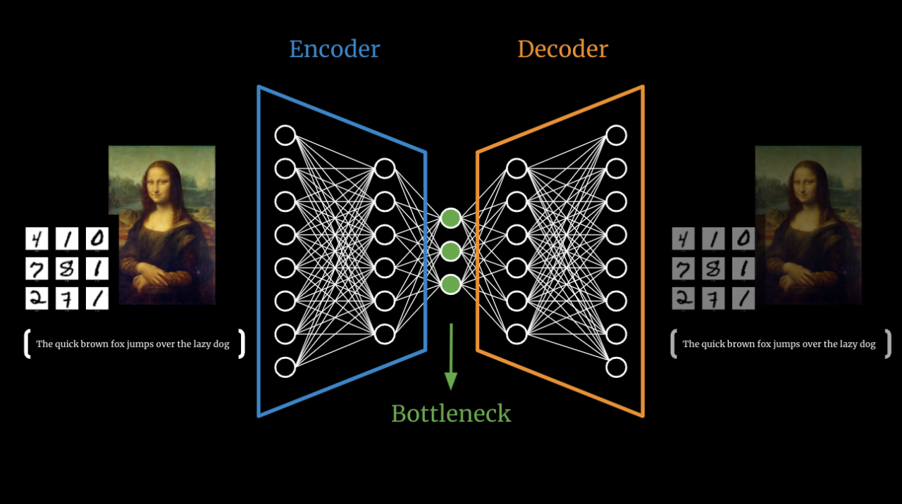
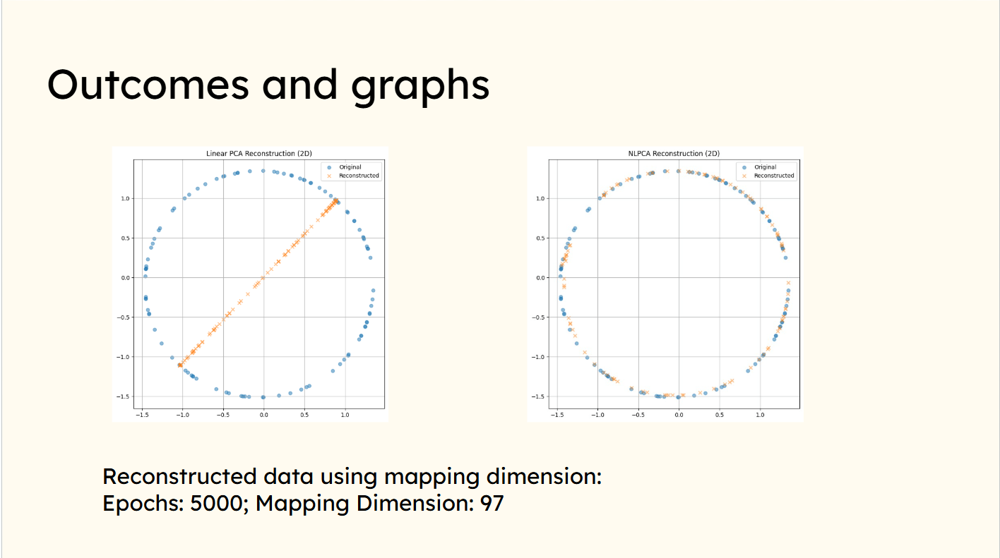

A Comparission between PCA and NLPCA
Published on: 2026-02-15
Recently, I found myself working with a team from my college to participate in a research paper comparing regularization mechanisms in latent variable models.
While reading around the topic, I was recommended the paper
"Nonlinear Principal Component Analysis Using Autoassociative Neural Networks by Mark A Kramer"
The paper essentially compares traditional PCA with a bottleneck-based neural network model referred to as NLPCA. As I read it, I wanted to clearly understand and explain in my own words what PCA is, what NLPCA is, why NLPCA was needed, and what exactly is nonlinear about it.
What is PCA?¶
Principal Component Analysis (PCA) is a method used to reduce
dimensionality.
Dimensionality simply refers to how many variables describe your data.
For example, suppose we want to build a model to classify vehicles.
Possible variables might include:
- Size
- Number of wheels
- Number of seats
- Colour
- Year of manufacture
Not all of these variables are equally important. To distinguish a bus from a car, size and number of wheels are far more informative than colour or year of manufacture.
When we mentally ignore less important variables and focus only on the most informative ones, we are effectively performing dimensional reduction.
That is what PCA does but mathematically and optimally.
Introduction to Eigenvectors¶
Before moving into dimensionality reduction, we need to understand eigenvectors.
When a linear transformation (represented by a matrix) acts on vectors, most vectors change both magnitude and direction. However, there exist special vectors whose direction remains unchanged. These vectors may be stretched or compressed, but they do not rotate.
These are called eigenvectors.
Mathematically, for a matrix $( A \in \mathbb{R}^{n \times n} )$, a non-zero vector $( v )$ is an eigenvector if:
$$
[
A v = \lambda v
]
$$
where:
- $( v )$ is the eigenvector
- $( \lambda )$ is the eigenvalue
The eigenvalue ( \lambda ) tells us how the vector is scaled:
- $( \lambda > 1 )$ → stretched
- $( 0 < \lambda < 1 )$ → compressed
- $( \lambda < 0 )$ → scaled and reversed
Geometrically, eigenvectors represent the intrinsic directions of a transformation, and eigenvalues measure their importance.
Later, we will see that identifying important directions in data reduces to solving:
$$[
A v = \lambda v
]$$
which is why eigenvectors are central to PCA.
The Mathematics Behind PCA¶
In the notation used in the paper, the PCA model is written as:
$$
\mathbf{T} = \mathbf{L}\mathbf{P}^T + \mathbf{E}
\tag{1}
$$
where:
- $\mathbf{T}$ is the data matrix
- $\mathbf{L}$ contains the principal component scores
- $\mathbf{P}$ contains the loadings
- $\mathbf{E}$ is the residual matrix
- $f$ is the number of retained factors ($f < m$)
the technical terms and math behind latent space, what is it exactly?
Let us understand it through an annology. Imagine you
The optimality condition is that the Euclidean norm of the residual
matrix $\mathbf{E}$ is minimized for a given number of factors.
PCA can also be viewed as a linear mapping from $$\mathbb{R} \rightarrow
\mathbb{R}$$
Taking $$\mathbf{P}^T \mathbf{P} = \mathbf{I}$$
without loss of generality, the mapping is:
$$
\mathbf{Y} = \mathbf{T}\mathbf{P}
\tag{2}
$$
Reconstruction is obtained by reversing the projection:
$$
\mathbf{Y}' = \mathbf{T}\mathbf{P}^T
\tag{3}
$$
where the reconstruction error is:
$$
\mathbf{E} = \mathbf{Y} - \mathbf{Y}'
$$
The smaller the feature dimension $f$ the larger the residual norm
$|\mathbf{E}|.$
To understand this, we can imagine a 2D plot of linearly scattered data. The points roughly lie along a slanted direction.
PCA computes the eigenvectors of the covariance matrix and identifies the direction of maximum variance. This eigenvector represents the principal axis of the data.
We can then draw a best-fit line along this principal direction.
Instead of representing each point using two coordinates (x, y), we project each point onto this principal axis. Now, to represent a data point, we only need its coordinate along this eigenvector direction.

A 2D representation of PCA
In other words:
Original representation → 2 coordinates
PCA representation → 1 coordinate (projection onto principal axis)
This reduces the dimensionality from 2D to 1D while preserving as much variance as possible.
Qualitatively, PCA does the same thing in higher dimensions:
it finds the directions of maximum variance (principal components) and projects the data onto a lower-dimensional linear subspace formed by those directions.
The Limitation: Why PCA Has High Bias¶
PCA assumes that data lies near a flat linear subspace.
This is a strong geometric assumption.
If the true structure of the data is curved — such as circular or spiral — PCA cannot represent it accurately. Even with infinite data,PCA cannot bend its projection surface.
This structural rigidity is what we refer to as high bias.
PCA assumes the world is flat.
Latent Space¶
Before we get into NLPCA and Latent space let'd first understand what a latent space actually is.
Let us understand with an analogy.
Imagine you just woke up and opened the curtains to look outside. You notice that the ground is wet, the wind feels cold,there is water on the leaves of trees and the overall mood seems gloomy. From these observations, you can infer that, 'It has rained!' You never actually saw the rain, but from the available evidence, you concluded that it must have happened. Each time you encounter a similar scene, you would likely make the same inference.
This is similar to how latent space works. It captures underlying factors from the data and uses them to form internal representations. The model does not directly observe the hidden cause, but it learns to infer it from the patterns present in the dataset.
Enter Nonlinear PCA (NLPCA)¶
To model curved structures, we introduce nonlinearity through neural networks.
NLPCA uses a bottleneck autoencoder:
Input → Encoder → Latent Space → Decoder → Output
Mathematically:
Encoder:
$$
z = f(W_1 x + b_1)
$$
Decoder:
$$
\hat{x} = g(W_2 z + b_2)
$$
Here, $f$ and $g$ are nonlinear activation functions such as ReLU or tanh.
Because of these nonlinearities, the mapping from input space to latent space is nonlinear. The model can now learn curved manifolds rather than flat subspaces.
The objective remains reconstruction-based:
$$
\min |X - \hat{X}|^2
$$
But optimization is now performed using gradient descent instead of
eigen decomposition.

Why the Bottleneck Matters¶
If we remove the bottleneck (i.e., latent dimension equals input dimension), the network can simply memorize the input.
Reconstruction loss would approach zero — but no meaningful structure would be learned.
By enforcing $k < d$, we force compression. The model must extract patterns rather than copy inputs.
This compression acts as an implicit form of regularization.
Conclusion¶

Result of our trained model
PCA draws a line(linear representation) thorugh the circle wheras NLPCA reconstructs the orginal data(non-linear representation)
Conclusion¶
PCA and NLPCA solve the same problem — dimensionality reduction — but with different tools and trade-offs.
PCA uses eigendecomposition to find a linear subspace that maximizes variance. It's fast, deterministic, and mathematically elegant. The solution is always the same for a given dataset. But PCA is fundamentally limited: it can only model flat, linear structures. When data lies on a curved manifold, like a circle or spiral PCA's straight-line projection fails to capture the underlying geometry.
NLPCA addresses this limitation by using neural networks with nonlinear activation functions. Through a bottleneck autoencoder architecture, it can learn curved manifolds that better represent complex data structures. However, this flexibility comes at a cost: optimization through gradient descent is slower, solutions depend on initialization, and the model is more prone to overfitting.
The practical takeaway: use PCA when your data is approximately linear — it's faster, more stable, and easier to interpret. Use NLPCA when the underlying structure is curved or complex — when reconstruction error with PCA remains high despite using many components.
All in all PCA assumes linearity and optimizes within that constraint. NLPCA learns the structure directly, trading simplicity for expressiveness.